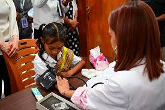

New Digital ID System Launched
Government introduces digital solution for identity verification
Timor-Leste’s Ministry of Technology has launched a new digital ID system to help citizens access government services faster and securely.

Education Reform in Rural Areas
Focus on infrastructure and digital access
The Ministry of Education announced investments in rural schools, including solar power, internet connectivity, and teacher training.

New Public Health Center Opened in Baucau
Bringing health services closer to the people
A new community health center was opened to serve over 5,000 residents, offering maternal care, vaccinations, and emergency services.